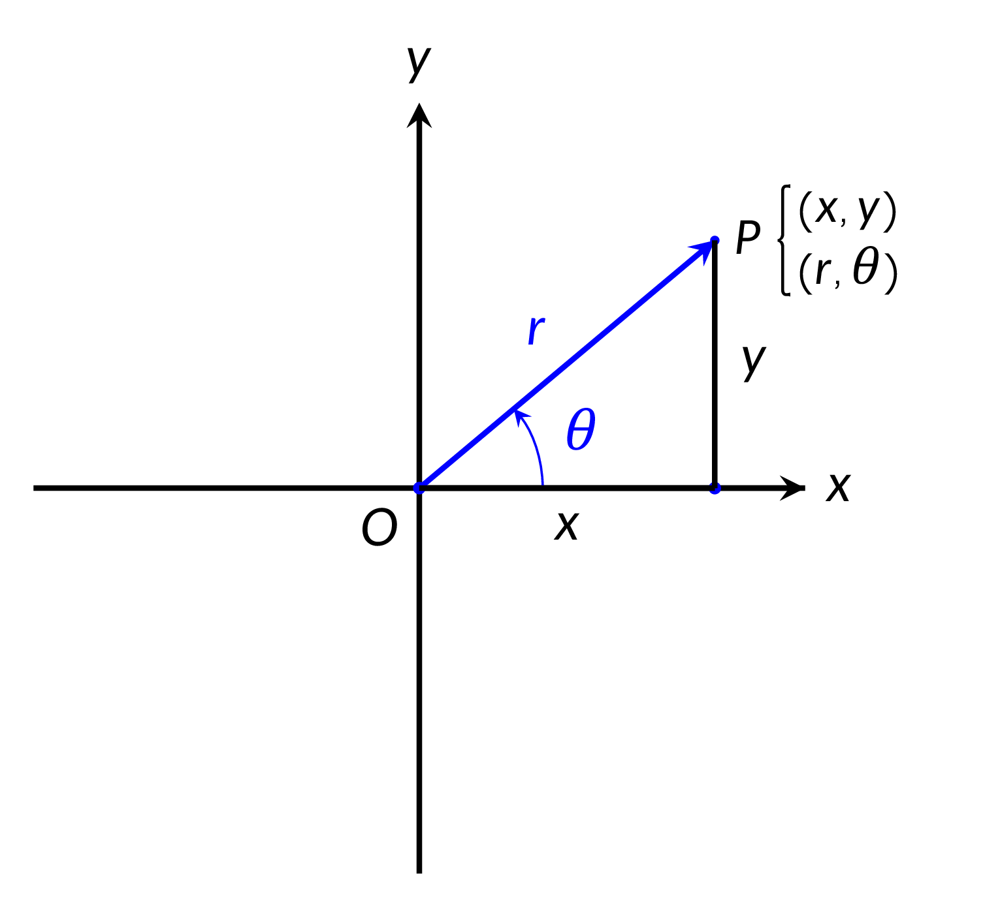

$a+bi=c+di$ if and only if $a=c$ and $b=d$
$(a+bi)+(c+di)=(a+c)+(b+d)i$
$(a+bi)-(c+di)=(a-c)+(b-d)i$
$(a+bi)(c+di)=(ac-bd)+(ad+bc)i$
$$\begin{aligned}&\dfrac{a+bi}{c+di}=\dfrac{(a+bi)(c-di)}{(c+di)(c-di)}\\ &\quad=\dfrac{ac+bd}{c^2+d^2}+\dfrac{bc-ad}{c^2+d^2}i\end{aligned}$$

The point $P(x,y)$ represents the complex number $z=x+iy$. The point $P$ can also be represented by polar coordinates $(r,\theta)$. Since
$x=r\cos \theta$ and $y=r\sin \theta$, we have
$$z=x+iy=r(\cos \theta+i\sin \theta)$$
called the Polar Form of the complex number. We often call
$$r=|z|=\sqrt{r^2+y^2}$$
the modulus and $\theta$ the amplitude of $z=x=iy$.
If $z_1=r_1\left( \cos \theta_1 +i\sin \theta_1\right)$ and $z_2=r_2\left( \cos \theta_2 +i\sin \theta_2\right)$ then $$\begin{aligned} &z_1z_2=r_1r_2\left[\cos\left( \theta_1+\theta_2 \right)+i\sin\left( \theta_1+\theta_2 \right) \right] \\ \\ &\dfrac{z_1}{z_2}=\dfrac{r_1}{r_2}\left[\cos\left(\theta_1-\theta_2\right)+i\sin \left(\theta_1-\theta_2 \right)\right] \end{aligned}$$
If $z=r \left( \cos \theta + i\sin \theta \right)$ then $$\dfrac{1}{z}=\dfrac{1}{r}\left( \cos \theta - i\sin \theta\right)$$
If $z=r\left( \cos \theta + i\sin \theta \right)$ and $n$ is a positive integer, then $$z^n=r^n\left( \cos n\theta + i\sin n\theta \right)$$
Let $z=r\left( \cos \theta + i\sin \theta \right)$ and let $n$ be a positive integer.
Then $z$ has the $n$ distinct nth roots
$$w_k=r^{1/n}\left[ \cos \left( \dfrac{\theta + 2k\pi}{n} \right) + i\sin \left( \dfrac{\theta + 2k\pi}{n} \right) \right]$$
Where $k=1,2,3,..., (n-1)$.
If $z=x + iy$ then $$e^z=\sum_{n=0}^{\infty} \dfrac{z^n}{n!}=1+z+\dfrac{z^2}{2!}+\dfrac{z^3}{3!}+\cdots $$
$$e^{iy}=\cos y + i\sin y$$ $$e^{x + iy}=e^xe^{iy}=e^x \left( \cos y + i\sin y \right)$$